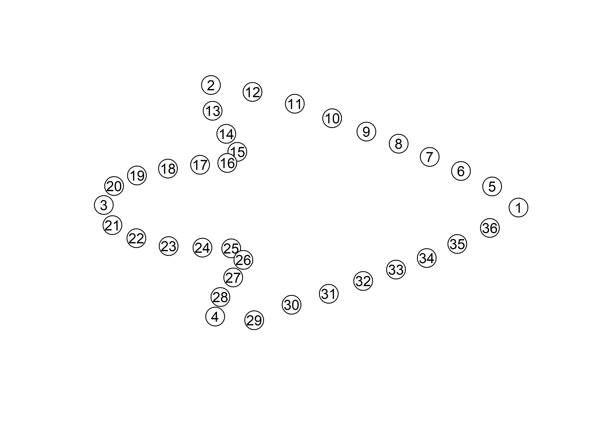
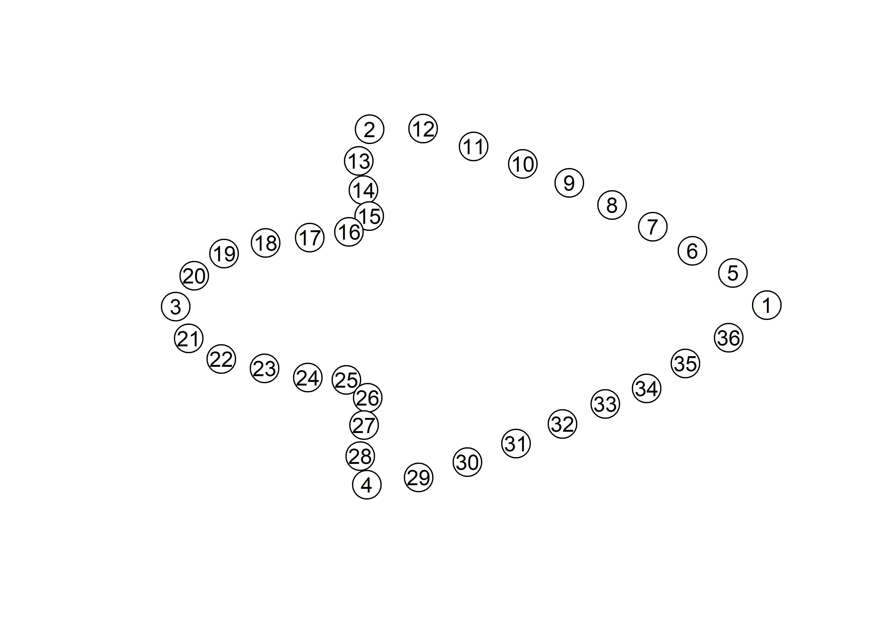
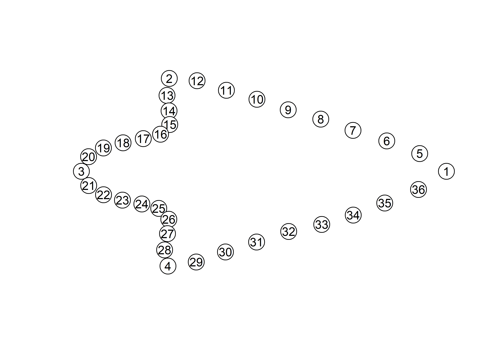
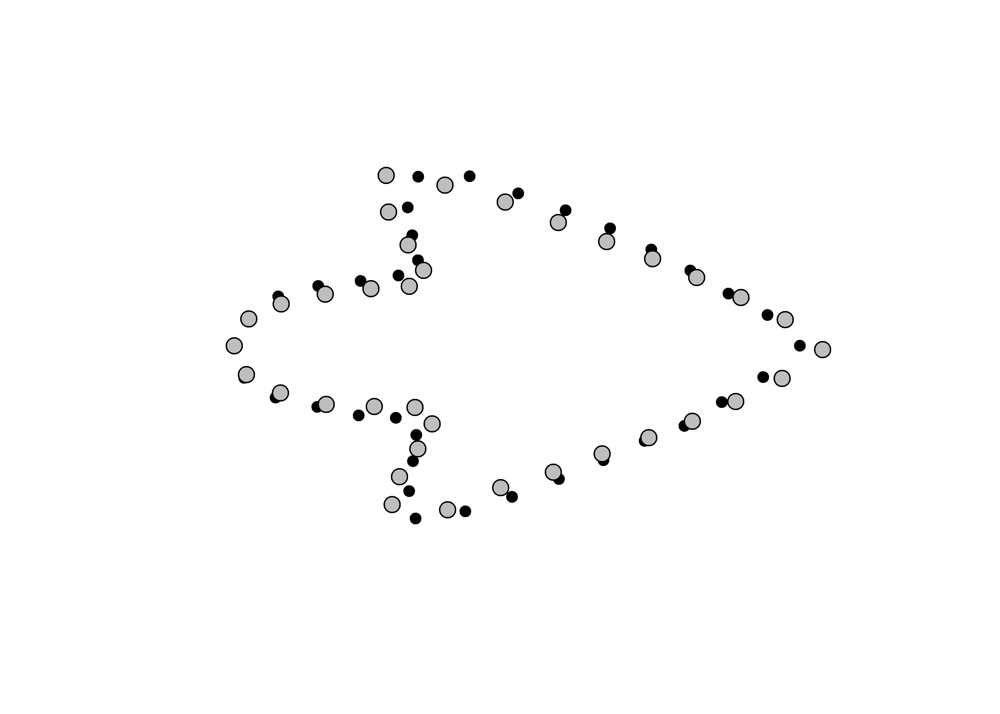
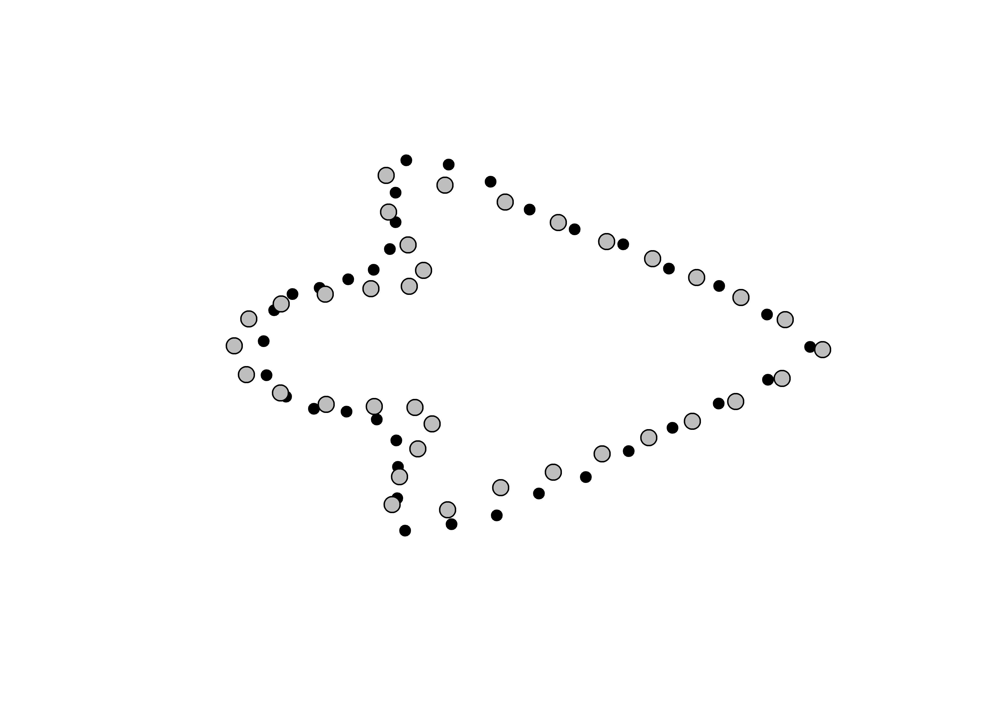
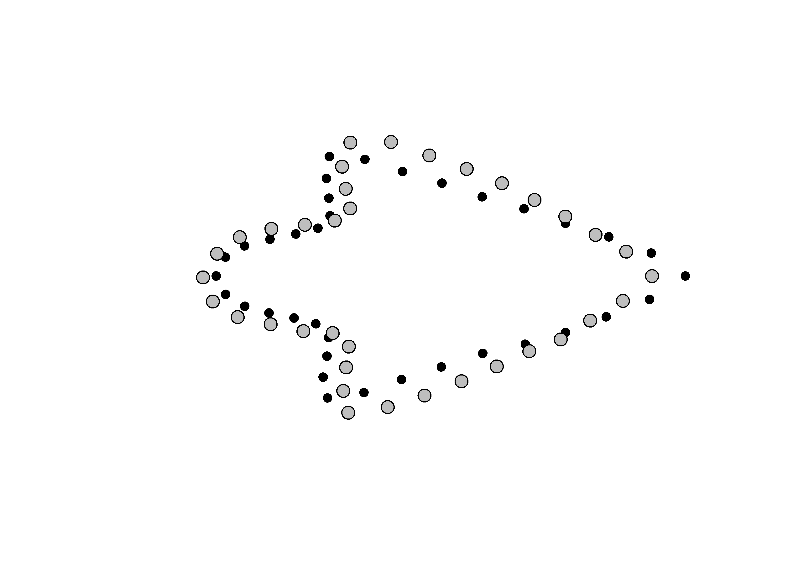

Chapter 4 Procrustes ANOVA - allometry
A residual randomisation permutation procedure (RRPP; n = 10,000 permutations) was used for all Procrustes ANOVAs (Adams and Collyer 2015; Michael L. Collyer and Adams 2018), which has higher statistical power and a greater ability to identify patterns in the data should they be present (Anderson and Ter Braak 2003). To assess whether shape changes differ by size or region (Texas natural geography, as determined by Texas Parks and Wildlife), Procrustes ANOVAs (Goodall 1991) were also run that enlist effect-sizes (zscores) computed as standard deviates of the generated sampling distributions (M. L. Collyer, Sekora, and Adams 2015).
# general allometry
fit.size <- procD.lm(shape ~ size,
data = gdf,
print.progress = FALSE,
iter = 9999)
# general allometry
anova(fit.size)##
## Analysis of Variance, using Residual Randomization
## Permutation procedure: Randomization of null model residuals
## Number of permutations: 10000
## Estimation method: Ordinary Least Squares
## Sums of Squares and Cross-products: Type I
## Effect sizes (Z) based on F distributions
##
## Df SS MS Rsq F Z Pr(>F)
## size 1 0.17502 0.175025 0.0733 6.9606 2.9892 7e-04 ***
## Residuals 88 2.21277 0.025145 0.9267
## Total 89 2.38779
## ---
## Signif. codes: 0 '***' 0.001 '**' 0.01 '*' 0.05 '.' 0.1 ' ' 1
##
## Call: procD.lm(f1 = shape ~ size, iter = 9999, data = gdf, print.progress = FALSE)4.1 Procrustes ANOVA - shape and size
A residual randomisation permutation procedure (RRPP; n = 10,000 permutations) was used for all Procrustes ANOVAs (Adams and Collyer 2015; Michael L. Collyer and Adams 2018), which has higher statistical power and a greater ability to identify patterns in the data should they be present (Anderson and Ter Braak 2003). To assess whether shape changes differ by group (geography and time), Procrustes ANOVAs (Goodall 1991) were also run that enlist effect-sizes (zscores) computed as standard deviates of the generated sampling distributions (M. L. Collyer, Sekora, and Adams 2015).
# size
fit.sz.reg <- procD.lm(size ~ river,
data = gdf,
print.progress = FALSE,
iter = 9999)
# size
anova(fit.sz.reg)##
## Analysis of Variance, using Residual Randomization
## Permutation procedure: Randomization of null model residuals
## Number of permutations: 10000
## Estimation method: Ordinary Least Squares
## Sums of Squares and Cross-products: Type I
## Effect sizes (Z) based on F distributions
##
## Df SS MS Rsq F Z Pr(>F)
## river 8 7909 988.6 0.2428 3.2466 2.5719 0.007 **
## Residuals 81 24665 304.5 0.7572
## Total 89 32573
## ---
## Signif. codes: 0 '***' 0.001 '**' 0.01 '*' 0.05 '.' 0.1 ' ' 1
##
## Call: procD.lm(f1 = size ~ river, iter = 9999, data = gdf, print.progress = FALSE)# pairwise comparison of LS means = which differ?
sz.reg <- pairwise(fit.sz.reg,
groups = qdata$river)
summary(sz.reg,
confidence = 0.95,
test.type = "dist")##
## Pairwise comparisons
##
## Groups: Brazos Colorado Guadalupe Neches NRG Nueces Red San Jacinto Trinity
##
## RRPP: 10000 permutations
##
## LS means:
## Vectors hidden (use show.vectors = TRUE to view)
##
## Pairwise distances between means, plus statistics
## d UCL (95%) Z Pr > d
## Brazos:Colorado 15.9176305 19.19761 1.29020004 0.1000
## Brazos:Guadalupe 0.7580378 19.97695 -1.61764853 0.9397
## Brazos:Neches 3.6323333 14.67246 -0.31605174 0.6287
## Brazos:NRG 10.3901605 15.28824 0.95398294 0.1784
## Brazos:Nueces 22.8018694 21.15453 1.72811114 0.0360
## Brazos:Red 24.4121972 25.56707 1.53112071 0.0590
## Brazos:San Jacinto 4.0830386 21.03244 -0.53548007 0.6964
## Brazos:Trinity 6.6548055 17.73907 0.14607584 0.4629
## Colorado:Guadalupe 15.1595927 21.34858 1.05512025 0.1538
## Colorado:Neches 19.5499638 16.00164 1.96832829 0.0200
## Colorado:NRG 26.3077909 16.40670 2.51178858 0.0021
## Colorado:Nueces 38.7194999 22.11154 2.68448528 0.0012
## Colorado:Red 40.3298276 26.53894 2.40237055 0.0057
## Colorado:San Jacinto 20.0006691 22.35920 1.40588667 0.0763
## Colorado:Trinity 9.2628250 18.83239 0.48093179 0.3398
## Guadalupe:Neches 4.3903711 16.90076 -0.24987444 0.6028
## Guadalupe:NRG 11.1481982 17.55598 0.86612599 0.1995
## Guadalupe:Nueces 23.5599072 22.66651 1.65245027 0.0428
## Guadalupe:Red 25.1702349 27.03777 1.46943042 0.0668
## Guadalupe:San Jacinto 4.8410764 22.89941 -0.45328224 0.6708
## Guadalupe:Trinity 5.8967677 19.95392 -0.11449468 0.5543
## Neches:NRG 6.7578271 11.08661 0.77563684 0.2344
## Neches:Nueces 19.1695361 18.34483 1.65981630 0.0408
## Neches:Red 20.7798638 22.79949 1.41368919 0.0694
## Neches:San Jacinto 0.4507053 18.36063 -1.81321679 0.9608
## Neches:Trinity 10.2871388 14.40331 1.02271131 0.1596
## NRG:Nueces 12.4117090 18.61716 0.90375933 0.1921
## NRG:Red 14.0220367 22.96142 0.77764307 0.2275
## NRG:San Jacinto 6.3071218 19.01857 0.03969153 0.4989
## NRG:Trinity 17.0449659 14.94820 1.83882396 0.0247
## Nueces :Red 1.6103277 27.96368 -1.39435516 0.9073
## Nueces :San Jacinto 18.7188308 24.20465 1.18182599 0.1225
## Nueces :Trinity 29.4566749 21.25125 2.20150386 0.0086
## Red:San Jacinto 20.3291585 27.69863 1.08556209 0.1395
## Red:Trinity 31.0670026 24.99737 1.96246021 0.0202
## San Jacinto:Trinity 10.7378441 20.90669 0.55678181 0.3075# shape
fit.sh.reg <- procD.lm(shape ~ river,
data = gdf,
print.progress = FALSE,
iter = 9999)
# shape
anova(fit.sh.reg)##
## Analysis of Variance, using Residual Randomization
## Permutation procedure: Randomization of null model residuals
## Number of permutations: 10000
## Estimation method: Ordinary Least Squares
## Sums of Squares and Cross-products: Type I
## Effect sizes (Z) based on F distributions
##
## Df SS MS Rsq F Z Pr(>F)
## river 8 0.42705 0.053381 0.17885 2.2052 2.9281 0.0016 **
## Residuals 81 1.96074 0.024207 0.82115
## Total 89 2.38779
## ---
## Signif. codes: 0 '***' 0.001 '**' 0.01 '*' 0.05 '.' 0.1 ' ' 1
##
## Call: procD.lm(f1 = shape ~ river, iter = 9999, data = gdf, print.progress = FALSE)# pairwise comparison of LS means = which differ?
sh.reg <- pairwise(fit.sh.reg,
groups = qdata$river)
summary(sh.reg,
confidence = 0.95,
test.type = "dist")##
## Pairwise comparisons
##
## Groups: Brazos Colorado Guadalupe Neches NRG Nueces Red San Jacinto Trinity
##
## RRPP: 10000 permutations
##
## LS means:
## Vectors hidden (use show.vectors = TRUE to view)
##
## Pairwise distances between means, plus statistics
## d UCL (95%) Z Pr > d
## Brazos:Colorado 0.08072748 0.13143344 0.3011976 0.3894
## Brazos:Guadalupe 0.07980651 0.13775324 0.1309493 0.4482
## Brazos:Neches 0.07168035 0.10111285 0.6815219 0.2590
## Brazos:NRG 0.10556816 0.10565028 1.6444866 0.0505
## Brazos:Nueces 0.17913715 0.14639690 2.2220175 0.0108
## Brazos:Red 0.09212266 0.17698140 -0.1007469 0.5376
## Brazos:San Jacinto 0.13532610 0.14527568 1.4376744 0.0775
## Brazos:Trinity 0.07369235 0.12306918 0.2239167 0.4164
## Colorado:Guadalupe 0.11464798 0.14598646 0.9766810 0.1741
## Colorado:Neches 0.08418578 0.11134919 0.8691866 0.2017
## Colorado:NRG 0.13626629 0.11474796 2.1159535 0.0133
## Colorado:Nueces 0.16640622 0.15422110 1.8586728 0.0298
## Colorado:Red 0.12104420 0.18295681 0.5457479 0.3013
## Colorado:San Jacinto 0.10753032 0.15364363 0.6606284 0.2656
## Colorado:Trinity 0.06076109 0.13152033 -0.4833835 0.6797
## Guadalupe:Neches 0.09567576 0.11777603 1.0373386 0.1598
## Guadalupe:NRG 0.06407460 0.12363352 -0.1272764 0.5494
## Guadalupe:Nueces 0.22109467 0.15699645 2.6034353 0.0018
## Guadalupe:Red 0.06195903 0.18643495 -1.3063993 0.9017
## Guadalupe:San Jacinto 0.14982491 0.15844299 1.4830531 0.0712
## Guadalupe:Trinity 0.09602507 0.13770895 0.6490092 0.2693
## Neches:NRG 0.09105546 0.07710529 2.1267701 0.0148
## Neches:Nueces 0.13756352 0.12808743 1.8395625 0.0316
## Neches:Red 0.09986999 0.16045265 0.3565659 0.3709
## Neches:San Jacinto 0.07611771 0.12686809 0.2153618 0.4202
## Neches:Trinity 0.04528912 0.10134519 -0.5641399 0.6992
## NRG:Nueces 0.21333304 0.13173762 2.9872837 0.0005
## NRG:Red 0.07187481 0.16372397 -0.5782769 0.7110
## NRG:San Jacinto 0.13137175 0.12994117 1.6883106 0.0463
## NRG:Trinity 0.10816277 0.10439324 1.7467547 0.0387
## Nueces :Red 0.23393432 0.19206425 2.1914436 0.0111
## Nueces :San Jacinto 0.12108716 0.16659633 0.7722720 0.2301
## Nueces :Trinity 0.13927474 0.14590170 1.5208120 0.0648
## Red:San Jacinto 0.15047204 0.19194369 0.9853604 0.1729
## Red:Trinity 0.11296222 0.17500347 0.4283078 0.3386
## San Jacinto:Trinity 0.08581380 0.14537717 0.1848062 0.42984.2 Morphological integration
land.gps <- c("A","A","B","A","A","A","A","A","A","A","A","A","B","B","B","B",
"B","B","B","B","B","B","B","B","B","B","B","B","A","A","A","A",
"A","A","A","A")
it <- integration.test(Y.gpa$coords,
partition.gp = land.gps,
iter = 9999,
print.progress = FALSE)
summary(it)##
## Call:
## integration.test(A = Y.gpa$coords, partition.gp = land.gps, iter = 9999, print.progress = FALSE)
##
##
##
## r-PLS: 0.9317
##
## Effect Size (Z): 7.30442
##
## P-value: 1e-04
##
## Based on 10000 random permutationsplot(it)
4.3 Morphological disparity
morphol.disparity(shape ~ river,
groups = qdata$river,
data = gdf,
print.progress = FALSE,
iter = 9999)##
## Call:
## morphol.disparity(f1 = shape ~ river, groups = qdata$river, iter = 9999, data = gdf, print.progress = FALSE)
##
##
##
## Randomized Residual Permutation Procedure Used
## 10000 Permutations
##
## Procrustes variances for defined groups
## Brazos Colorado Guadalupe Neches NRG Nueces Red San Jacinto Trinity
## 0.020641303 0.015922812 0.016179547 0.031765899 0.023302750 0.007038479 0.010875562 0.012438615 0.016050555
##
##
## Pairwise absolute differences between variances
## Brazos Colorado Guadalupe Neches NRG Nueces Red San Jacinto Trinity
## Brazos 0.000000000 0.0047184911 0.0044617565 0.011124595 0.002661446 0.013602824 0.009765741 0.008202688 0.0045907480
## Colorado 0.004718491 0.0000000000 0.0002567346 0.015843086 0.007379937 0.008884333 0.005047250 0.003484197 0.0001277431
## Guadalupe 0.004461756 0.0002567346 0.0000000000 0.015586352 0.007123203 0.009141068 0.005303985 0.003740932 0.0001289915
## Neches 0.011124595 0.0158430864 0.0155863518 0.000000000 0.008463149 0.024727420 0.020890337 0.019327284 0.0157153433
## NRG 0.002661446 0.0073799372 0.0071232026 0.008463149 0.000000000 0.016264271 0.012427187 0.010864135 0.0072521941
## Nueces 0.013602824 0.0088843334 0.0091410680 0.024727420 0.016264271 0.000000000 0.003837083 0.005400136 0.0090120765
## Red 0.009765741 0.0050472502 0.0053039849 0.020890337 0.012427187 0.003837083 0.000000000 0.001563053 0.0051749933
## San Jacinto 0.008202688 0.0034841973 0.0037409320 0.019327284 0.010864135 0.005400136 0.001563053 0.000000000 0.0036119404
## Trinity 0.004590748 0.0001277431 0.0001289915 0.015715343 0.007252194 0.009012076 0.005174993 0.003611940 0.0000000000
##
##
## P-Values
## Brazos Colorado Guadalupe Neches NRG Nueces Red San Jacinto Trinity
## Brazos 1.0000 0.6234 0.6505 0.1416 0.7471 0.2102 0.4045 0.4365 0.6144
## Colorado 0.6234 1.0000 0.9785 0.0608 0.3883 0.4138 0.6607 0.7394 0.9907
## Guadalupe 0.6505 0.9785 1.0000 0.0768 0.4295 0.4102 0.6561 0.7221 0.9874
## Neches 0.1416 0.0608 0.0768 1.0000 0.1556 0.0206 0.0808 0.0520 0.0411
## NRG 0.7471 0.3883 0.4295 0.1556 1.0000 0.0940 0.2533 0.2601 0.3692
## Nueces 0.2102 0.4138 0.4102 0.0206 0.0940 1.0000 0.7463 0.6250 0.3909
## Red 0.4045 0.6607 0.6561 0.0808 0.2533 0.7463 1.0000 0.8917 0.6433
## San Jacinto 0.4365 0.7394 0.7221 0.0520 0.2601 0.6250 0.8917 1.0000 0.7266
## Trinity 0.6144 0.9907 0.9874 0.0411 0.3692 0.3909 0.6433 0.7266 1.00004.4 Mean shapes
# subset landmark coordinates to produce mean shapes
new.coords <- coords.subset(A = Y.gpa$coords,
group = qdata$river)
names(new.coords)## [1] "Brazos" "Colorado" "Guadalupe" "Neches" "NRG" "Nueces " "Red" "San Jacinto"
## [9] "Trinity"# group shape means
mean <- lapply(new.coords, mshape)
# plot mean shapes
plot(mean$Brazos) 
plot(mean$Colorado)
plot(mean$Guadalupe)
plot(mean$Neches)
plot(mean$NRG)
plot(mean$Nueces)
plot(mean$Red)plot(mean$`San Jacinto`)plot(mean$Trinity)
# comparison plots
plotRefToTarget(mean$Brazos,
mean$Colorado,
method = "points",
mag = 1)
plotRefToTarget(mean$Brazos,
mean$Guadalupe,
method = "points",
mag = 1)
plotRefToTarget(mean$Brazos,
mean$Neches,
method = "points",
mag = 1)plotRefToTarget(mean$Brazos,
mean$NRG,
method = "points",
mag = 1)
plotRefToTarget(mean$Brazos,
mean$Nueces,
method = "points",
mag = 1)
plotRefToTarget(mean$Brazos,
mean$Red,
method = "points",
mag = 1)plotRefToTarget(mean$Brazos,
mean$`San Jacinto`,
method = "points",
mag = 1)
plotRefToTarget(mean$Brazos,
mean$Trinity,
method = "points",
mag = 1)
plotRefToTarget(mean$Colorado,
mean$Guadalupe,
method = "points",
mag = 1)
plotRefToTarget(mean$Colorado,
mean$Neches,
method = "points",
mag = 1)plotRefToTarget(mean$Colorado,
mean$NRG,
method = "points",
mag = 1)
plotRefToTarget(mean$Colorado,
mean$Nueces,
method = "points",
mag = 1)plotRefToTarget(mean$Colorado,
mean$Red,
method = "points",
mag = 1)plotRefToTarget(mean$Colorado,
mean$`San Jacinto`,
method = "points",
mag = 1)plotRefToTarget(mean$Colorado,
mean$Trinity,
method = "points",
mag = 1)plotRefToTarget(mean$Guadalupe,
mean$Neches,
method = "points",
mag = 1)
plotRefToTarget(mean$Guadalupe,
mean$NRG,
method = "points",
mag = 1)plotRefToTarget(mean$Guadalupe,
mean$Nueces,
method = "points",
mag = 1)plotRefToTarget(mean$Guadalupe,
mean$Red,
method = "points",
mag = 1)plotRefToTarget(mean$Guadalupe,
mean$`San Jacinto`,
method = "points",
mag = 1)
plotRefToTarget(mean$Guadalupe,
mean$Trinity,
method = "points",
mag = 1)plotRefToTarget(mean$Neches,
mean$NRG,
method = "points",
mag = 1)plotRefToTarget(mean$Neches,
mean$Nueces,
method = "points",
mag = 1)
plotRefToTarget(mean$Neches,
mean$Red,
method = "points",
mag = 1)
plotRefToTarget(mean$Neches,
mean$`San Jacinto`,
method = "points",
mag = 1)plotRefToTarget(mean$Neches,
mean$Trinity,
method = "points",
mag = 1)
plotRefToTarget(mean$NRG,
mean$Nueces,
method = "points",
mag = 1)plotRefToTarget(mean$NRG,
mean$Red,
method = "points",
mag = 1)
plotRefToTarget(mean$NRG,
mean$`San Jacinto`,
method = "points",
mag = 1)plotRefToTarget(mean$NRG,
mean$Trinity,
method = "points",
mag = 1)
plotRefToTarget(mean$Red,
mean$`San Jacinto`,
method = "points",
mag = 1)
plotRefToTarget(mean$Red,
mean$Trinity,
method = "points",
mag = 1)
plotRefToTarget(mean$`San Jacinto`,
mean$Trinity,
method = "points",
mag = 1)